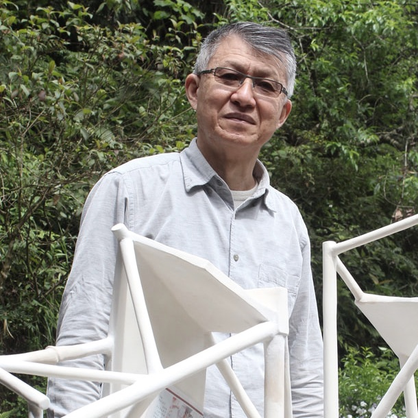

About Lin
作家簡介Lin Chen-Long, born in 1955 in Nantou County, is a Taiwanese ceramist. He established the Tsu Yang Kiln (瓷揚窯), one of the most famous Taiwanese kilns, and devotes himself to modern ceramics. Lin is one of the earliest promoters encouraging cooperation between ceramists and painters and calligraphers in Taiwan. In his works, Lin reflects upon the relationship between human beings and the environment and explores the beauty of simplicity. His artworks demonstrate the harmonious coexistence of Formalism, an art concept from the West emphasizing simplicity, and Oriental glazes, materials originating in the East.
In the "Space and Glaze" series, Lin returns to three basic elements of a picture — point, line, and surface — and interprets them in a new spirit. He creates works with simple geometric blocks, cylinders, and tea bowls, representing not only "points" in Lin's concept but also a symbol of Oriental culture. Moreover, Lin gives traditional Chinese glazes a new form of expression: he applies celadon and copper-red glaze, two famous types of conventional Chinese glazes, on the blocks and tea bowls, and pure white glaze on the cylinders. In doing so, Lin proves that Chinese glazes can be used creatively rather than only as seen on Chinese antique vases. The series shows the beauty of point-line-surface composition in three dimensions, and how traditional Chinese glazes can be expressed in a modern way.
